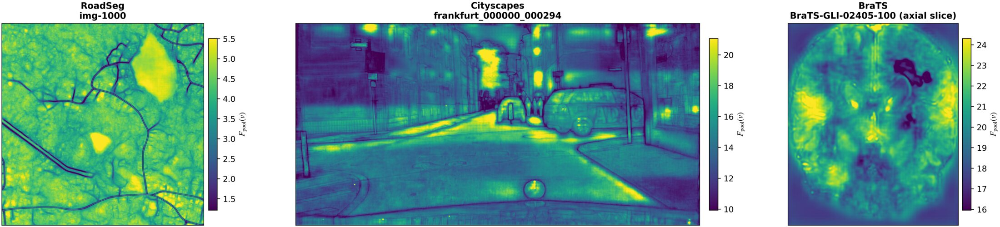

Same probabilities, different calibrated output
Adding a constant to all logits of a pixel leaves the softmax unchanged, but several standard calibrators still depend on that arbitrary offset. In segmentation the offset varies across pixels.
S(z + c·1) = S(z) but g(z + c·1) ≠ g(z)

Spatial std of the offset per image (logit units)
Mean over held-out cases of Stdv(Fpool(v)), whiskers = interquartile range, 5-model nnU-Net ensembles (paper Table 3). It shows the offset is present, not how much a non-TI calibrator loses.